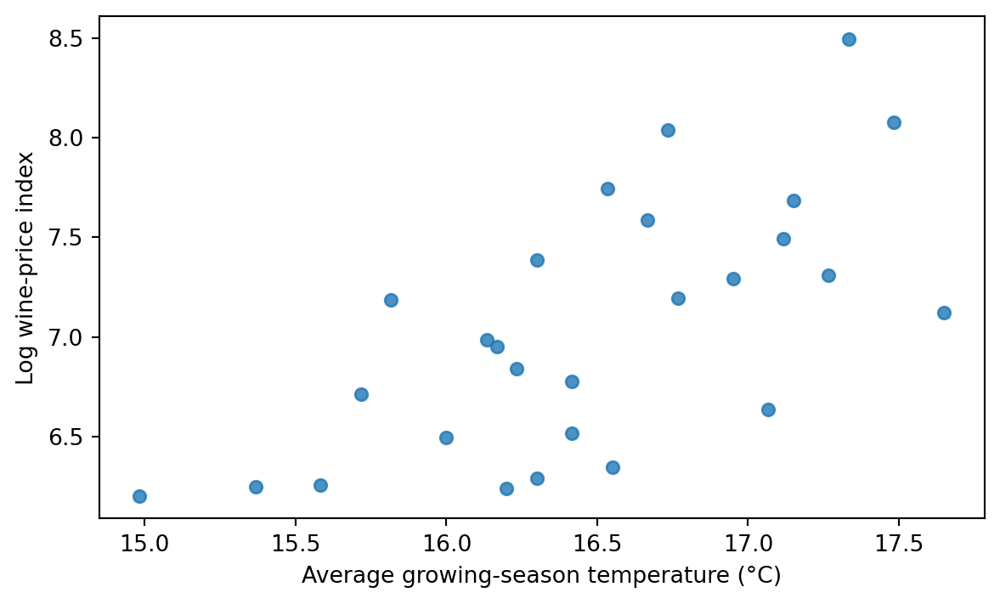

source = "https://raw.githubusercontent.com/egarpor/handy/master/datasets/wine.csv"
paths = [Path("../data/wine.csv"), Path("data/wine.csv")]
local_data = next((path for path in paths if path.is_file()), None)
wine = pd.read_csv(local_data if local_data is not None else source)
required = {"Year", "Price", "AGST", "WinterRain", "HarvestRain", "Age"}
assert required.issubset(wine.columns)
assert len(wine) == 27 and not wine[list(required)].isna().any().any()
print(wine[["Year", "Price", "AGST", "WinterRain", "HarvestRain", "Age"]].head().to_string(index=False))
fig, ax = plt.subplots(figsize=(7, 4))
ax.scatter(wine["AGST"], wine["Price"], s=30, alpha=0.8)
ax.set(xlabel="Average growing-season temperature (°C)",
ylabel="Log wine-price index")
plt.show() Year Price AGST WinterRain HarvestRain Age
1952 7.4950 17.1167 600 160 31
1953 8.0393 16.7333 690 80 30
1955 7.6858 17.1500 502 130 28
1957 6.9845 16.1333 420 110 26
1958 6.7772 16.4167 582 187 25